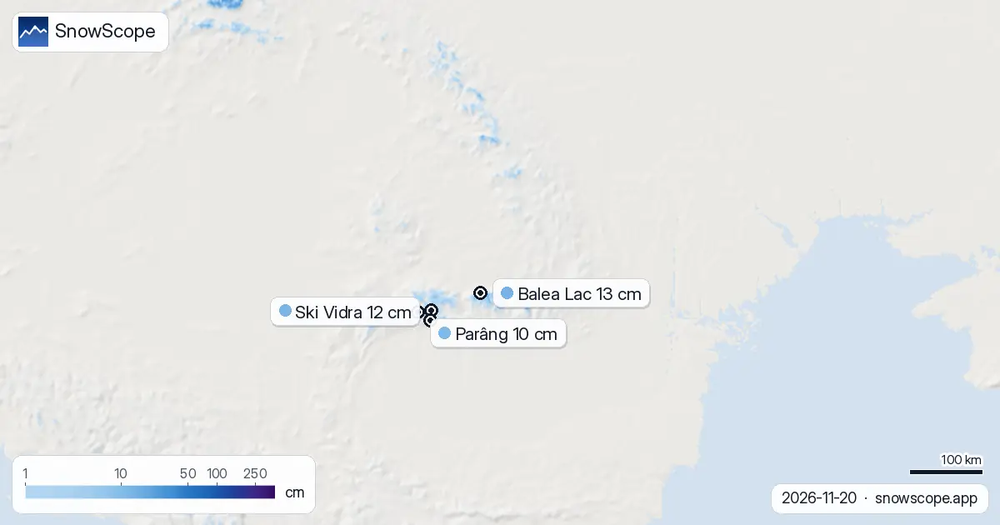
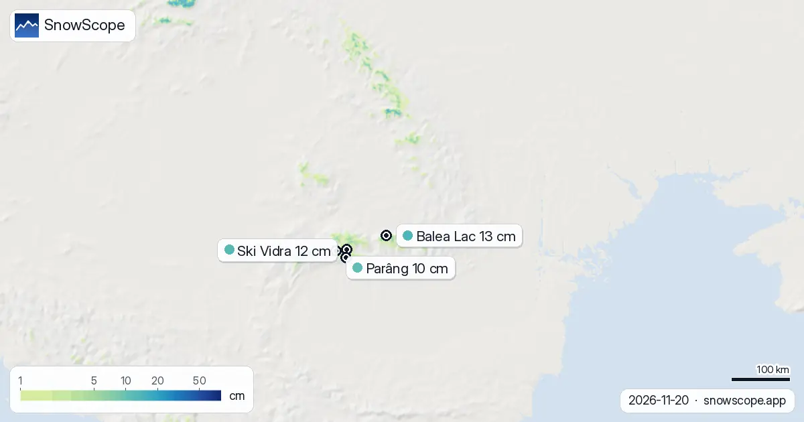

Acoperirea de zăpadă a României s-a dublat în mai puțin de o săptămână
Munții albi ai României au crescut rapid. Într-o singură săptămână, acoperirea de zăpadă s-a triplat aproape de la 1.910 km² la 4.000 km², o creștere de 2.090 km² care marchează începutul sezonului pe crestele înalte.
Vezi prognoza de zăpadă pentru Balea Lac în aplicația SnowScopeGrosimea zăpezii, alerte și harta 3D, gratuit.Balea Lac conduce, dar întreaga țară devine albă
Balea Lac are cel mai gros strat de zăpadă măsurat acum: 13 cm (măsurat la stație pe 20 noiembrie). Se află la 2.032 m în masivul Făgărașului, unde aerul rece se așează mai întâi. Ski Vidra din același lanț arată 12 cm, beneficiind și el de altitudine și poziție. Stațiunile mai joase, cum ar fi Rânca, la 1.703 m, rămân în urmă cu 10 cm.
Ceea ce contează mai mult este viteza schimbării. Cu o săptămână în urmă, zăpada acoperea doar 1.910 km² din munții României. Astazi acopera 4.000 km², mai mult decât dublu. Această schimbare ne spune că iarna a sosit nu doar pe câteva vârfuri, ci pe tot teritoriul muntos înalt.
| Day | White area | Most new snow in 3 days | Deepest resort |
|---|---|---|---|
| luni, 16 noiembrie | 6.630 km² | 8 cm | Borsec |
| marți, 17 noiembrie | 7.710 km² | 5 cm | Havas Bucsin |
| miercuri, 18 noiembrie | 3.650 km² | 6 cm | Ski Vidra |
| joi, 19 noiembrie | 2.530 km² | 4 cm | Balea Lac |
| vineri, 20 noiembrie | 4.000 km² | 7 cm | Balea Lac |

Tendința: o săptămână de creștere rapidă
Cu șapte zile în urmă, zăpada era rară. Munții Retezat, Rodna și Parâng aveau zăpadă doar pe versanții lor cei mai înalți. Până pe 16 noiembrie, acoperirea se extinsese la 6.630 km². Apoi a venit o dezghețare la mijlocul săptămânii—până pe 18 noiembrie, zona albă se contract la 3.650 km²—dar zăpada nouă care a căzut de atunci a reconstruit-o la 4.000 km² așa cum este astazi.
Modelul arată cât de volatilă poate fi începutul sezonului. Zăpada cade, aerul mai cald o topește din nou, apoi sosește următoarea furtună. De aceea adâncimile din începutul sezonului sunt mici și pot dispărea rapid. La Balea Lac, doar 13 cm se află pe pământ în pofida celor 5 cm care au căzut în ultimele 72 de ore. Pietrele pot fi și mai aproape dedesubt.

Unde zăpada este cea mai grosă: deasupra 2.000 m
Modelul nostru de zăpadă arată benzi clare după altitudine. Sub 1.500 m, aproape nicio zăpadă nu rămâne pe pământ. Între 1.500 și 2.000 m, acoperirea este subțire și mozaicată: adâncime medie de 3 cm, cu zăpadă pe 78 la sută din teren. Deasupra 2.000 m, imaginea se îmbunătățește brusc. Zăpada se află suficient de groasă pentru a schia: adâncime medie de 14 cm în zona deasupra 2.000 m, și acoperirea de zăpadă este completă la 100 la sută.
Trei zone fierbinți se detașează în munți
Trei masive au prins cea mai multă zăpadă în ultimele 72 de ore. Retezatul, în Carpații meridionali, conduce cu 51 cm de zăpadă nouă modelată în acea perioadă. Munții Rodnei, în nord, arată 26 cm. Parângul, și el în sud, ține 17 cm. Acestea sunt estimări de model pentru zone, nu măsurători în puncte, deci totalurile locale vor varia. Toate trei au ridicat-se deasupra liniei de zăpadă, care se află în prezent la 1.500 m.
Ce vor aduce următoarele trei zile
Mai multă zăpadă vine. Modelul nostru prevede până la 21 cm pe munți în următoarele trei zile, cu 20 noiembrie fiind vârful, aducând 14 cm. Până atunci, stațiunile ar trebui să se aprofundeze. Balea Lac și Ski Vidra sunt prevăzute să câștige 14 cm fiecare; Șureanu, stațiunea din sud, ar putea vedea 18 cm. Chiar și locurile mai joase, cum ar fi Rânca, vor câștiga 11 cm. Linia de zăpadă va rămâne sus sau se va ridica ușor, deci doar versanții superiori se vor completa.
Dincolo de săptămâna următoare
În următoarele patru zile (24 până 27 noiembrie), modelul nostru sugerează că sunt posibili alți 24 cm, deși această prognoză este mai puțin sigură și se poate schimba. Nicio zăpadă nu cade la sud în Bulgaria, unde doar 2 cm se află acum pe vârfurile sale cele mai bune. Ucraina, la est, arată 6 la sută acoperire de zăpadă și este prevăzută cu totaluri similare României. Deocamdată, munții României sunt centrul activității de iarnă în regiune.
Doar 13 din 52 de stațiuni au în prezent zăpadă pe pământ, deci condițiile sunt de început de sezon și împrăștiate. Zăpada din începutul sezonului este des subțire și instabilă pe măsură ce se așează. Consultați buletinul oficial de avalanșă dacă intenționați să plecați din pistele marcate. Harta SnowScope arată cea mai recentă adâncime și zona de acoperire zone cu zona.
Sfaturi pentru schiori
- Rămâneți la stațiunile deasupra 1.900 m pentru acoperire mai fiabilă. Balea Lac și Ski Vidra sunt cea mai bună alegere astazi; așteptați-vă la 13-12 cm și pete subțiri mai jos.
- Fiți atenți la pietre și gheață. Zăpada din începutul sezonului este fragilă și se poate topi sau comprima rapid. Ceea ce este schiabil astazi se poate schimba în zile.
- Mergeți sus după 23 noiembrie când zăpada proaspătă atinge vârful. Benzile superioare (deasupra 2.000 m) vor fi cele mai pline odată ce zăpada nouă se așează.
- În săptămâna următoare, Retezatul va ține probabil cea mai multă zăpadă. Dacă explorați regiunea de teren deschis, verificați prognoza avalanșei oficiale pentru regiune.
- Așteptați-vă la schimbări de vreme. Vălurile reci construiesc zăpadă; perioadele calde o subțiază. Începutul sezonului necesită flexibilitate și verificare constantă.
About these numbers
Resort snow depths are the deepest snow on the resort's upper slopes from the SnowScope snow model (about 1 km, run of 20 noiembrie); they are estimates for an area, not a measurement at one point. Station values are measurements on the date shown. Forecasts can change. Always read the official avalanche bulletin before going off-piste.
Cite this report
For research, teaching or the press: the numbers and charts are free to reuse under CC BY 4.0 with this citation.
SnowScope (2026), Acoperirea de zăpadă a României s-a dublat în mai puțin de o săptămână, https://snowscope.app/blog/ro/2026/11/romania-snow-cover-gain-this-week-20-november-2026.html, accessed 2026-11-20
SnowScope (Atlas Labs). (2026, November 20). Acoperirea de zăpadă a României s-a dublat în mai puțin de o săptămână. SnowScope snow reports. https://snowscope.app/blog/ro/2026/11/romania-snow-cover-gain-this-week-20-november-2026.html
BibTeX
@misc{snowscope2026romaniasnowcovergainthis,
author = {{SnowScope (Atlas Labs)}},
title = {Acoperirea de zăpadă a României s-a dublat în mai puțin de o săptămână},
year = {2026},
month = nov,
howpublished = {\url{https://snowscope.app/blog/ro/2026/11/romania-snow-cover-gain-this-week-20-november-2026.html}},
note = {Published 2026-11-21 12:51 UTC; accessed 2026-11-20}
}· CC BY 4.0 · Methods, data and tools →
Balea Lac: snow and temperature by height, this winter vs last (tools) →
Follow Balea Lac
Gratuit: un mesaj când vine zăpadă nouă și prognoza în fiecare dimineață.